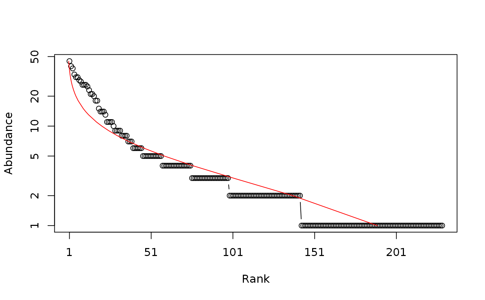
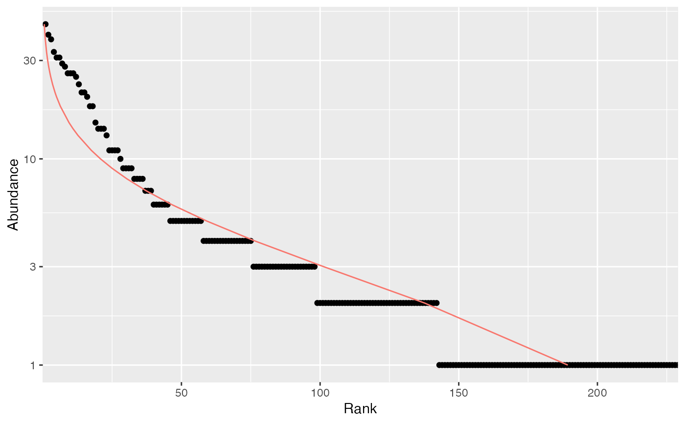

SpeciesDistribution.RdA Species Distribution is a (preferably named) vector containing species abundances or probabilities.
as.SpeciesDistribution(x, ...) # S3 method for data.frame as.SpeciesDistribution(x, ...) # S3 method for integer as.SpeciesDistribution(x, ...) # S3 method for numeric as.SpeciesDistribution(x, ...) # S3 method for SpeciesDistribution autoplot(object, ..., Distribution = NULL, ylog = TRUE, main = NULL, xlab = "Rank", ylab = NULL) # S3 method for SpeciesDistribution plot(x, ..., Distribution = NULL, type = "b", log = "y", main = NULL, xlab = "Rank", ylab = NULL) is.SpeciesDistribution(x) as.ProbaVector(x, ...) # S3 method for data.frame as.ProbaVector(x, ...) # S3 method for integer as.ProbaVector(x, Correction = "None", Unveiling = "None", RCorrection = "Jackknife", JackOver = FALSE, JackMax = 10, CEstimator = "ZhangHuang", q = 0, ..., CheckArguments = TRUE) # S3 method for numeric as.ProbaVector(x, Correction = "None", Unveiling = "None", RCorrection = "Jackknife", JackOver = FALSE, JackMax = 10, CEstimator = "ZhangHuang", q = 0, ..., CheckArguments = TRUE) is.ProbaVector(x) as.AbdVector(x, ...) # S3 method for data.frame as.AbdVector(x, Round = TRUE, ...) # S3 method for integer as.AbdVector(x, ...) # S3 method for numeric as.AbdVector(x, Round = TRUE, ...) is.AbdVector(x)
| x | An object. |
|---|---|
| object | An object. |
| Distribution | The distribution to fit on the plot. May be |
| Round | If |
| Correction | A string containing one of the possible corrections to estimate a probability distribution: |
| Unveiling | A string containing one of the possible unveiling methods to estimate the probabilities of the unobserved species: |
| RCorrection | A string containing a correction recognized by |
| JackOver | If |
| JackMax | The highest jackknife order allowed. Default is 10. Allowed values are between 1 and 9. |
| CEstimator | A string containing an estimator recognized by |
| q | A number: the order of entropy. Default is 0 for richness. Used only to estimate asymptotic probability distributions with |
| type | The plot type, see |
| log | The axis to plot in log scale, e.g. |
| main | The main title of the plot. if |
| xlab | The X axis label, "Rank" by default. |
| ylab | The Y axis label. if |
| ylog | Logical; if |
| ... | Additional arguments to be passed to |
| CheckArguments | Logical; if |
SpeciesDistribution objects include AbdVector and ProbaVector objects.
as.AbdVector just sets the class of the numeric or integer x so that appropriate versions of community functions (generic methods such as Diversity) are applied. Abundance values are rounded (by default) to the nearest integer.
as.ProbaVector normalizes the vector so that it sums to 1. If Correction is not "None", the observed abundance distribution is used to estimate the actual species distribution. The list of species will be changed: zero-abundance species will be cleared, and some unobserved species will be added. First, observed species probabilities are estimated folllowing Chao and Shen (2003), i.e. input probabilities are multiplied by the sample coverage, or according to more sophisticated models: Chao et al. (2013, single-parameter model), or Chao et al. (2015, two-parameter model). The total probability of observed species equals the sample coverage. Then, the distribution of unobserved species can be unveiled: their number is estimated according to RCorrection (if the Jackknife estimator is chosen, the JackOver argument allows using the order immediately over the optimal one). The coverage deficit (1 minus the sample coverage) is shared by the unobserved species equally (Unveiling = "unif", Chao et al., 2013) or according to a geometric distribution (Unveiling = "geom", Chao et al., 2015).
These functions can be applied to data frames to calculate the joint diversity (Gregorius, 2010).
SpeciesDistribution objects can be plotted. The plot method returns the estimated parameters of the fitted distribution. The broken stick has no parameter, so the maximum abundance is returned.
Fisher's alpha (Fisher et al., 1943) is estimated to fit the log-series distribution. The estimation is done by the fisher.alpha function of package vegan. It may differ substantially from the estimation returned by optimal.theta from package untb.
Eric Marcon <Eric.Marcon@ecofog.gf>, Bruno Herault <Bruno.Herault@ecofog.gf>
Chao, A. and Shen, T. J. (2003). Nonparametric estimation of Shannon's index of diversity when there are unseen species in sample. Environmental and Ecological Statistics 10(4): 429-443.
Chao, A., Wang, Y. T. and Jost, L. (2013). Entropy and the species accumulation curve: a novel entropy estimator via discovery rates of new species. Methods in Ecology and Evolution 4(11):1091-1100.
Chao, A., Hsieh, T. C., Chazdon, R. L., Colwell, R. K., Gotelli, N. J. (2015) Unveiling the Species-Rank Abundance Distribution by Generalizing Good-Turing Sample Coverage Theory. Ecology 96(5): 1189-1201.
Fisher R.A., Corbet A.S., Williams C.B. (1943) The Relation Between the Number of Species and the Number of Individuals in a Random Sample of an Animal Population. Journal of Animal Ecology 12: 42-58.
Gregorius H.-R. (2010) Linking Diversity and Differentiation. Diversity 2(3): 370-394.
# Load Paracou data (number of trees per species in two 1-ha plot of a tropical forest) data(Paracou618) # Ns is the total number of trees per species Ns <- as.AbdVector(Paracou618.MC$Ns) # Whittaker plot, poorly fitted by a log-normal distribution plot(Ns, Distribution = "lnorm")#> $mu #> [1] 0.9519812 #> #> $sigma #> [1] 1.011383 #># ggplot version autoplot(Ns, Distribution = "lnorm")